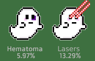

Each Ghost NFT has six attributes that affect rarity: background, body colour, mouth, eyes, hats and accessories. In the iconography below, the percentage means how many % of the NFTs have this attribute.
Taking into account these %, we calculated the rarity score of each attribute using the formula: rarity score = 1/percentage
For example, 16,67% of NFTs have Matrix glasses. So, the rarity score will be 1/16.67% = 6.00 points
The total ranking score for each NFT is the sum of each attribute's ranking scores for this NFT.
The rarity table with RANKING can be found there:CHIA GHOSTS RARITY TABLE * Will be moved to this website soon